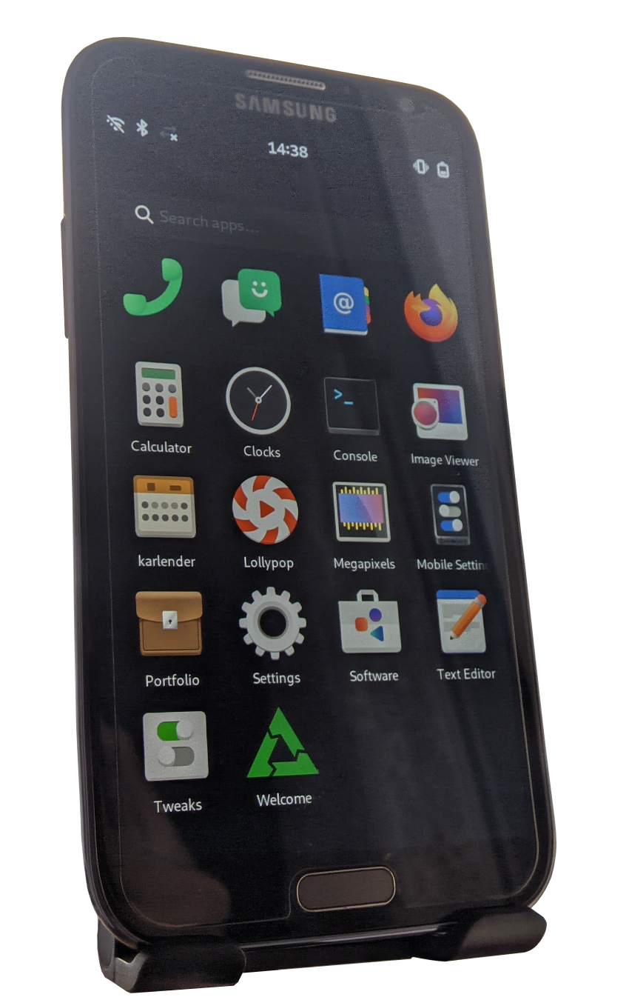

Samsung Galaxy Note II (samsung-t03g)
|
 Samsung Galaxy Note II running Phosh | |
| Manufacturer | Samsung |
|---|---|
| Name | Galaxy Note II |
| Codename | samsung-t03g |
| Released | 2012 |
| Category | testing |
| Original software | Android |
| Original version | 4.1.1 |
| Extended version | 4.4.2 |
| postmarketOS kernel | 6.3-rc7 |
| Hardware | |
| Chipset | Samsung Exynos 4412 Quad |
| CPU | Quad-core 1.6 GHz Cortex-A9 |
| GPU | Mali-400 MP4 |
| Display | 720x1280 AMOLED |
| Storage | 16/32/64 GB |
| Memory | 2 GB |
| Architecture | armv7 |
| Type | handset |
| Unixbench Whet/Dhry score | 890 |
| USB Networking |
Works
|
|---|---|
| Flashing |
Works
|
| Touchscreen |
Works
|
| Display |
Works
|
| WiFi |
Works
|
| FDE |
Works
|
| Mainline |
Works
|
| Battery |
Works
|
| 3D Acceleration |
Works
|
| Audio |
Works
|
| Bluetooth |
Partial
|
| Camera | |
| GPS |
Broken
|
| Mobile data |
Broken
|
| SMS |
Broken
|
| Calls |
Broken
|
| USB OTG |
Partial
|
| NFC | |
| Accelerometer | |
|---|---|
| Magnetometer | |
| Ambient Light | |
| Proximity | |
| Hall Effect |
Unavailable
|
| Barometer | |
| Power Sensor |
Unavailable
|
| Camera Flash |
Works
|
|---|---|
| Keyboard |
Unavailable
|
| Touchpad |
Unavailable
|
| USB-A |
Unavailable
|
| HDMI/DP |
Works
|
| Ir TX |
Unavailable
|
| Ir RX |
Unavailable
|
| Stylus |
Broken
|
| Haptics |
Works
|
| Ethernet |
Unavailable
|
| FOSS bootloader |
Partial
|
| Primary Bootloader |
Works
|
|---|---|
| Secondary Bootloader |
Works
|
| Mainline |
Unavailable
|
| Internal Storage |
Works
|
| SD card |
Works
|
| USB Host | |
| USB Peripheral |
Works
|
| Display |
Works
|
| Keyboard |
Unavailable
|
| Buttons |
Works
|
Contents
Contributors
- Bloo
- Frost_I7 (I'll try to keep the wiki page up-to-date with the available info when I'm active.)
Users owning this device
- Blacksilver
- DolphinChips (Notes: kebab'd)
- Frost I7 (Notes: LOS 20/pmOS.)
- Frost I7 (Notes: Stock.)
- Km2 (Notes: Dead emmc, but I have an idea how to restore it)
- PL (Notes: Did boot pmOS previously. Trouble with boot.img atm, see pmbootstrap#2188)
- Some Chinese Guy
Information
Code name of the device is Midas.
For the LTE variant, see this page.
See the Samsung Galaxy S III page for more information.
How to enter flash mode
Hold Power + Volume Down + Home. When prompted, release all buttons and click Volume Up.
How to enter recovery mode
Hold Power + Volume Up + Home. When the Samsung logo appears, release all buttons.
Installation
System Image
You can install the system to an SD card or make a recovery zip (probably won't fit in the partition size).
| Be warned, the SD card will be formatted. |
To install the system to an SD card, use:
$ pmbootstrap install --sdcard=/dev/mmcblk
Kernel Image
Boot into flash mode, then flash the kernel:
$ pmbootstrap flasher flash_kernel
If you have done everything correctly, your Note II should reboot and you should see the Samsung logo. All that remains is to wait for the pmOS splash to appear.
U-Boot
According to this blog, there is a working U-Boot port for the Midas devices. Build it from this repository.
Installation
This manual describes the installation on the SD card as a secondary bootloader.
Clone the repository:
$ git clone https://github.com/fourkbomb/u-boot
$ cd u-boot
Optionally, apply patches made by ave4:
- https://gist.github.com/ave4/b4ac6c8a3abd3fd5d5b9f255cb2719d3
- https://gist.github.com/ave4/3e30c7d10eba42e948a78176f4da4326
$ git am 000*
Set up the toolchain:
$ export ARCH=arm
$ export CROSS_COMPILE=arm-none-eabi-
Build U-Boot:
$ make midas_defconfig && make -jN
$ ./create_4412_sd_image.sh u-boot.image
Install pmOS the usual way to the SD card and then flash U-Boot on top of it:
$ dd if=u-boot.image of=/dev/mmcblkN bs=512 skip=1 seek=1
Hardware
Display
Note II has two variants of the display panel. S6EVR02 and EA8061. To find out which panel yours has, run dmesg | grep 'panel driver' in TWRP or in a rooted Android shell (immediately after booting, otherwise the logs will have time to rotate and you won't see this message). Output will be similar to:
<6>[ 3.177303] lcd panel: ea8061 lcd panel driver has been probed.
eMMC
Partitions
| This will vary from device to device. |
$ sudo parted /dev/mmcblk2 print
Model: MMC VTU00M (sd/mmc) Disk /dev/mmcblk2: 15.8GB Sector size (logical/physical): 512B/512B Partition Table: gpt Disk Flags:
N7100XXSFQA1 firmware:
| Number | Start | End | Size | File system | Name | Flags |
|---|---|---|---|---|---|---|
| 1 | 4194kB | 8389kB | 4194kB | BOTA0 | msftdata | |
| 2 | 8389kB | 12.6MB | 4194kB | BOTA1 | msftdata | |
| 3 | 12.6MB | 33.6MB | 21.0MB | ext4 | EFS | msftdata |
| 4 | 33.6MB | 37.7MB | 4194kB | m9kefs1 | msftdata | |
| 5 | 37.7MB | 41.9MB | 4194kB | m9kefs2 | msftdata | |
| 6 | 41.9MB | 46.1MB | 4194kB | m9kefs3 | msftdata | |
| 7 | 46.1MB | 54.5MB | 8389kB | PARAM | msftdata | |
| 8 | 54.5MB | 62.9MB | 8389kB | BOOT | msftdata | |
| 9 | 62.9MB | 71.3MB | 8389kB | RECOVERY | msftdata | |
| 10 | 71.3MB | 164MB | 92.3MB | RADIO | msftdata | |
| 11 | 164MB | 168MB | 4194kB | TOMBSTONES | msftdata | |
| 12 | 168MB | 1602MB | 1434MB | ext4 | CACHE | msftdata |
| 13 | 1602MB | 3750MB | 2147MB | ext4 | SYSTEM | msftdata |
| 14 | 3750MB | 4337MB | 587MB | ext4 | HIDDEN | msftdata |
| 15 | 4337MB | 4345MB | 8389kB | OTA | msftdata | |
| 16 | 4345MB | 15.8GB | 11.4GB | ext4 | USERDATA | msftdata |
USB
OTG
USB OTG only works in the host mode, which requires changing "dr_mode" from "peripheral" to "host" in the device tree.
Notes: Device itself can be charged in the host mode, but you'll need to have an external power source to power the USB device.
Downstream
| This section is left for informational purposes only. |
Original kernel version: 3.0.31
LineageOS kernel version: 3.0.101
S Pen
To get the S Pen working, you may need to do the following:
- Put the following lines to
/etc/udev/hwdb.d/60-evdev.hwdb:
evdev:name:*e-pen* EVDEV_ABS_00=::300 EVDEV_ABS_01=::300
- Possibly update the hwdb:
$ sudo udevadm hwdb --update
- Restart the phone.
Gallery

{kind=link}
Other
TWRP
| Only if you still have Android installed. Make sure to boot into recovery mode at least once after flashing it, otherwise it will be overwritten by the default recovery. |
Using Heimdall:
$ heimdall flash --RECOVERY TWRP.img --no-reboot
Recommendations
- Enable SWAP.
- Enable binfmt_misc (CONFIG_BINFMT_MISC).
Issues
- The display brightness is too high when the display turns on.
- Solution: Change the brightness so it changes to the correct value.
- The sound output is distorted.
- Note: It's based on the CPU load.
- USB OTG doesn't switch modes automatically.
- Default CPU frequency is only 1.4GHz.
- Solution: Modify the device tree and add required frequencies.
- Warning: Do not touch it unless you know what you're doing!
See also
- Device package
- Kernel package
- Firmware package (Common board firmware for Exynos Note 2 and S3 devices)
- GSMArena
- TWRP
- Replicant
- Hardware table for Note II and its variants